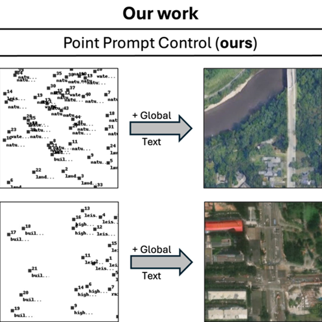
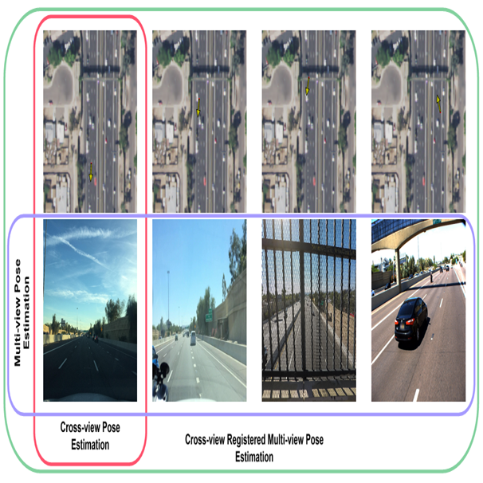

Summary
|
During my research, I gained expertise in developing state-of-the-art machine learning models and optimizing AI inferences for scalability and performance. Successfully engineered a multimodal model and retrieval system utilizing dense vision embeddings and developed a cross-vision pose estimation model that conditions on 3D reconstructions. Eager to apply technical skills and innovative solutions in advanced AI projects. Passionate about ML/DL/CV ∪ NLP ∪ Embodied AI
|
Papers
|

|
GeoDiT: Point-Conditioned Diffusion Transformer for Satellite Image Synthesis
Srikumar Sastry,
Dan Cher,
Brian Wei,
Aayush Dhakal,
Subash Khanal,
Dev Gupta,
Nathan Jacobs
arXiv, 2026
GeoDiT is a diffusion transformer for text-to-satellite image generation that replaces pixel-level conditioning with a simpler point-based control scheme and adaptive attention, enabling more flexible and semantically rich control while outperforming prior remote sensing generative models.
|
|

|
Crossview Registered Multiview Pose Estimation
Alexander Wollam,
Dev Gupta,
Nathan Jacobs
Paper, 2025
The work extends cross-view pose estimation from single images to multi-view inputs by adapting a multi-view 3D reconstruction framework and training on aligned ground-to-aerial datasets to jointly estimate 3DoF poses more robustly in aerial reference frames.
|
|
|
Independent Study - Stereo Video Generation
Dev Gupta
Paper, 2025
This project proposes a training-free stereo video generation pipeline that combines depth estimation, latent-space warping, and diffusion-based video synthesis to generate geometrically and temporally consistent right-view videos from monocular left-view inputs while exploring cycle-consistency constraints to improve fidelity.
|
Featured In
Supplementary Material
|